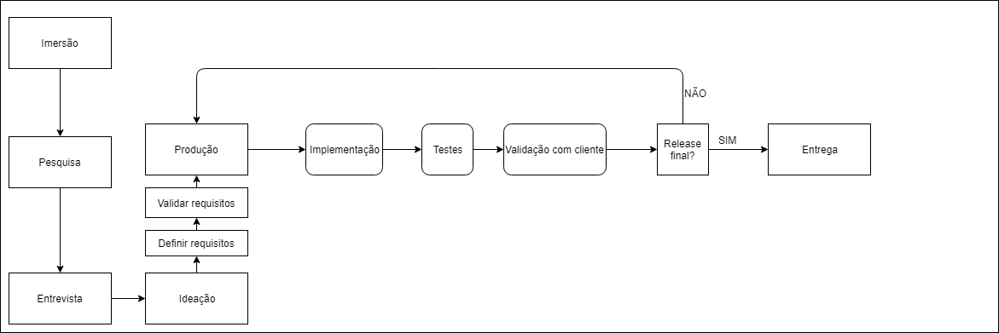

O grupo usa como processo de design a metodologia ágil scrum. Usa-se a ata da cadeira de Projetos, essa que foi baseada na metodologia, para alinhar e organizar as atividades entre o grupo. Paralelo a isso se usa o Trello para desenvolvimento das pesquisas. Usa-se também o Google Drive como hub de compartilhamento da equipe.
Em Ciência da Computação usamos o GitHub para desenvolvimento dos softwares requiridos. Também usamos as metodologias contempladas na cadeira de Fundamentos de Desenvolvimento de Software.
O grupo trabalha com processo de desenvolvimento incremental, sempre alinhando com o cliente para uma maior satisfação do cliente com o resultado final.

A arquitetura definida para o projeto foi a Event bus, visto que os eventos serão enviados para um a gente do sistema que ao identifcar o evento, o encaminhará para o a gente responsável.